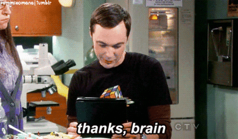
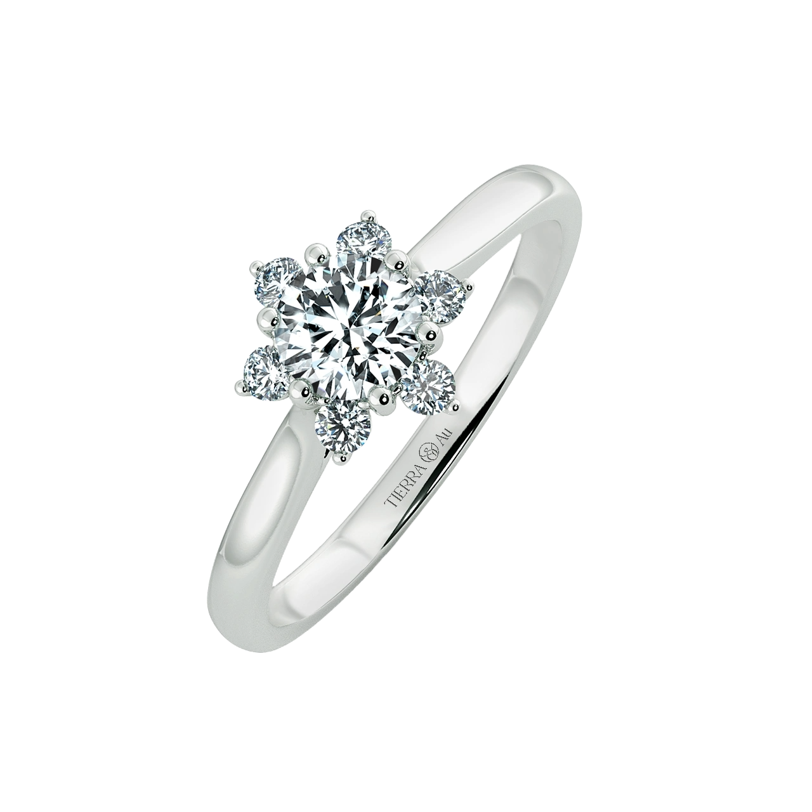
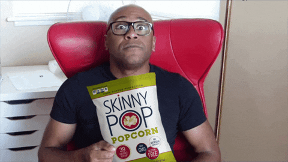

Episode 3: The One with the Proposal
Kids, remember when I told you about two big days in any love story.
In fact, there will be many other big days between those two.
Today I'm going to tell you about another incredible story.
The story of how I proposed to your mother.
It was the year of 2023.
We did survive through that crazy COVID thing.
Your dad managed to graduate and get a full-time job.
Your mom had no choice but to follow me to Saigon.
Our life was good.
We explored new things, travelled to new places.
And most importantly, I turned your mom into a runner
We moved into our first home
Enjoyed weekends on the couch
In summary,
But in the meantime...

*Trust me, I did the statistics*
Actually, your mother and I did have a plan to get married in the next year.
- Also us, every time we thought about it
And here was your father thinking about the proposal
Even if I knew your mother was going to say yes
It still scared the hell out of me! (ㆆ _ ㆆ)
Being in a couple is hard
And committing, making sacrifices it's hard
But if it's the right person, it's easy
Looking at that girl and knowingshe's all you really want out of life
That should be the easiest thing in the world
But there was only one problem left...
After some thoughts, I took her to a shopping mall...
Let her choose a ring as a Christmas gift...
Told her that it was our engagement ring...
And that, kids, is how I proposed to your mother
ヽ(•‿•)ノ
Hold up!
If there is one thing I can teach you, after all the time I spent on sitcoms
It'd be the ultimate proposal guide
And kids, welcome to...
Proposal 101
Step 1 : The time
If you have chemistry
All you need is one other thing
Timing
And when the time is right, you'll know it
There are no buts, no maybes, and no whys
You just do
But before Tet is also a wise choice...
You have news to share with family
And all your relatives will say congrats, instead of asking questions! ´･ᴗ･`
Step 2 : The place
Let me remind you, kids
It doesn't matter where you go, but who you go with
This is simply because...
Wait a minute...
We had something better than Google in 2023
A favorite vacation spot?

A beautiful natural setting?
Related to a shared interest?
And my final answer was...

VTM took place at Moc Chau with its stunning blossom-filled orchards
The finish line was at the place we took this photo in 2018

Finally, the most important reason is that...
People often get high after a run...
And tend to say yes to everything!
Step 3 : The ring
I was not rich as Chandler, but we were in the same boat!
Do you know what was even harder than picking an engagement ring?
It was getting to know the size of it!
Now I can fully understand Phoebe's advice
Why has no one ever got engagement shoes?
I can't believe after seven years together, I still don't know her ring size
But I won't let you follow in my footsteps, here is the trick:
- Tell your partner that their hands are bigger than yours
- They will voluntarily put their hands next to yours
- Compare their finger sizes with yours and do an estimate
Or you can just buy them another ring as a gift in advance

Now it's time to pick a ring!

Here is another secret:
If you have no idea where to get the ring, go to the mall!
In New Year holiday, your mother and I went to five different malls
She thought I just wanted a new pair of shoes
Actually, I was scouting around for her perfect ring
All I had to do was just asking one silly question:
Why so many jewelry stores in a shopping mall?
Pandora, Swarovski, DOJI, PNJ, Tierra,...
Then she would tell me everything about them
And the second I had my eyes on this ring
I knew it was the ring I had been looking for
A snow flower for my @snowflower_82
Step 4 : The play
The most important factor of any marriage proposal is the surprise
But somehow in the movies, it is translated into a drama
Barney went to Patrice for help and pretended to date her
So that Robin would realize her feelings for him and accept his proposal
Even after realizing she was manipulated
And I just can't mention this enough
And this didn't prevent Monica from running to Richard
Even Sheldon needs Ramona's suprising kiss to realize
Amy is the only woman he ever wanted to kiss for the rest of his life
Those are just to name a few
Can you see the common theme here?
There is always a third-person
Who makes them realize how much they love each other
But I didn't have anyone to become our story's Tuesday
Apparently, my best choice was becoming the second Chandler
So I persuaded her to postpone our marriagefor another two years, with all kind of reasons:
- I was too lazy to plan our wedding
- I wanted to spend more time on running
- I had mortgage to pay
- The pressure to have kids right after marriage
Last but not least
We were in arguments for weeks
She didn't want to let her parents down
And she wasn't afraid to have kids anymore
At that moment, I knew she was more than just being ready
But I kept on pushing it back until one week before the proposal
She did believe that year wedding was not gonna happen
And even imagined that I had a Tuesday
In the meantime, I also sent her a ton of signals
I randomly sang Darlin' by The Beach Boys
I asked her to rewatch The One with the Proposal

And in our dinner talk
But this play wouldn't be successful if she figured out the whole plan
Women always have that kind of weird instinctive sense

So here is another plan, to cover up the plan:
- Get her hook into Hogwarts Legacy soshe wouldn't notice I was disappearing
- Always lock the door so she couldn't sneak from behind and see the screen
- Do not tell anyone else about the plan
- Do not public this episode before the proposal (who knows if people stalk me on GitHub)
But the hardest part of this plan was hiding my happiness
Knowing that the girl in front of me was going to be my wife
I couldn't help but smile, just like any other stupid guys
Step 5 : The proposal
In this world, there are two billion ways to propose
From the Keep It Simple, Stupid one
To the most emotional one
But please remember
No matter what you say, be true and honest
You don't have to be perfect to be lovable
That's why I proposed to her at that time, at that place
Cause it can speak of my true self
The one wearing running shoes with 5" short and a T-shirt
But always ready to journey with her for the rest of my life
And I love her with everything I have, and everything I am
To my lobster, my heartworm and my everything
The End